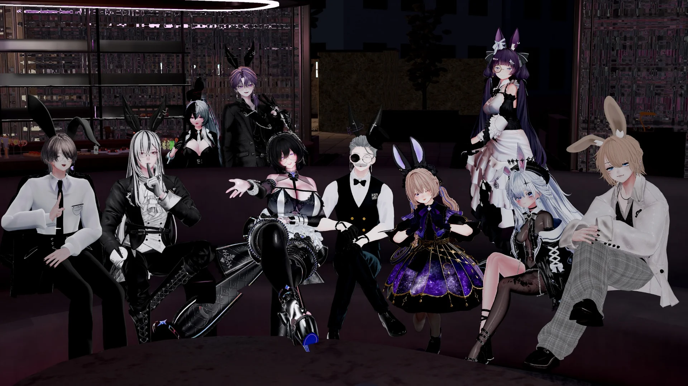

BUNNY∞NIGHTS
キャスト応募
あなたらしさで、今夜のひとときを。

JOIN OUR NIGHT
今夜の出会いを、
一緒につくりませんか。
お客さまとの会話を楽しみながら、あなたらしい接客で、特別なひとときを届ける。
Bunny∞Nightsのキャストとして、イベントを一緒につくることに興味のある方へ。
01 / ACTIVITIES
キャスト・黒服の活動について
キャスト
バニーをテーマにした装いで、お客さまとの会話を中心とした接客を行います。
黒服・運営と協力しながら、それぞれのキャストらしさで一夜をつくっていきます。
Bunny∞Nightsのキャストは、登録制です。登録後は、参加したい開催回に出勤希望を出していただきます。
あなたのペースで、一夜に参加。
毎回の出演や最低出勤回数は設けていません。
1回だけの参加も歓迎しています。
黒服
ご来場のお客さまの受付・案内や、当日の進行サポートを担当します。
キャストや運営と連携し、お客さまが安心して過ごせるよう、一夜を支える役割です。
キャスト・黒服の兼任を希望する方も、説明会でご相談ください。
02 / RECRUITMENT
応募について
まずは説明会で、イベントの内容やキャストの活動についてご案内します。
参加に興味のある方は、下の説明会日程をご確認ください。
- 説明会に申し込む
受付開始後、希望する説明会のGoogleフォームからお申し込みください。 - 説明会で内容を確認する
イベントの仕組みや活動内容をご案内します。気になる点もご相談ください。 - 運営の案内に沿って参加する
面接・練習会や参加手続きについては、運営からご案内します。
03 / BRIEFING
説明会の日程・参加申込み
次回の説明会は準備中です
日程と参加受付は、決まり次第こちらでご案内します。
04 / BEFORE APPLYING
応募を考えている方へ
まずは「イベントについて」と「参加案内・ルール」をご覧ください。
イベントの雰囲気や大切にしていることを知っていただけると嬉しいです。
説明会の日程と参加受付は、このページでご案内します。活動についての詳細は、説明会や運営からの案内をご確認ください。
イベントについて ↗ 参加案内・ルール ↗